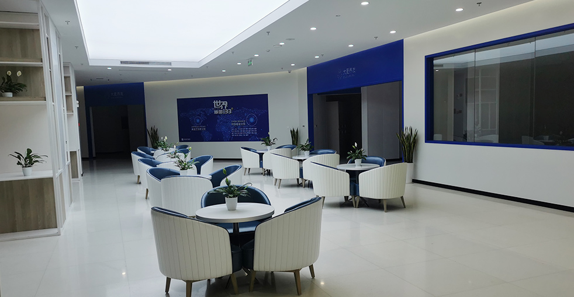

針對各階段脫髮的先進治療，從早期稀疏到重度禿頂
我們的禿頂修復計劃為Norwood III-VI級禿頂提供全面解決方案。我們結合先進微針FUE技術與策略性多階段規劃，即使是重度禿頂也能帶來自然、改變人生的效果。

結合FUE與FUT實現大面積禿頂覆蓋
策略性規劃帶來改變人生的效果
首席醫師運用3D分析進行完整頭皮和供髮評估
制定全面多階段策略以實現您的覆蓋目標
先進FUE提取技術最大化毛囊單位品質和數量
精確切口遵循自然髮角和優化密度模式
運用專利植入筆精準放置，實現最高存活率和生長效果
根據需要進行可選的後續治療，逐步建立密度和覆蓋率
為什麼我們的全面方案帶來改變人生的持久覆蓋
我們不僅治療當下，更為您的未來規劃。首席醫師制定全面長期策略，考慮未來脫髮、供髮可用性和階段性手術，確保您始終擁有自然年輕的外觀。
憑藉18+年經驗，我們完善了供髮提取技術，最大化可用毛囊同時保護供髮區域完整性。高效提取技術每次手術獲得更多高品質毛囊，意味著需要更少的治療次數。
從髮際線到髮旋，我們創建全面覆蓋，在各種光線和髮型下看起來自然濃密。策略性密度分佈確保您可以自信地打理髮型，不必擔心可見的稀疏。
行業領導者，實證效果
自2006年起成為微針植髮技術的先驅和領導者
遍布中國主要城市，均保持相同高標準
創新微針和植入筆技術帶來卓越效果
受全球患者信賴，帶來改變人生的效果
國際患者全程英語支持
頂級設施和嚴格安全協議，讓您安心
見證患者的驚人轉變


與滿意患者的珍貴時刻

非常滿意

極為滿意

感覺很棒

專業服務

滿意結果

明智選擇

完美轉變

感覺很棒
來自全球滿意患者的真實評價
"地中海禿頭讓我自卑了十幾年，做了禿頂植髮後終於敢拍照了！禿頂植髮費用比我查過的其他診所更合理！"
"多年來一直隱藏我的地中海禿頭，終於找到解決方案。禿頂植髮費用出奇地實惠，在Google搜尋'地中海禿頭治療'找到這家診所，口碑極佳！術後頭髮濃密自然，重拾自信！"
"頭頂植髮的效果真的太驚人了！從地中海禿到現在頭髮濃密，醫師的技術沒話說！禿頂植髮費用也很公道！"
"在Bing搜尋地中海禿頭治療找到這家！頭頂植髮的過程比我想像中輕鬆，術後效果自然到像沒禿過一樣！"
"禿頂植髮費用透明公開，沒有隱藏收費！地中海禿頭治療效果超好，現在頭髮密度跟年輕時差不多，太滿意了！"
"頭頂植髮改變了我的人生！本來已經放棄了，結果在Google找到這家做禿頂植髮。地中海禿頭治療效果比任何假髮都好！"
體驗我們現代舒適的設施

頂級設施

高級休息室

無菌先進設備

私密專業空間

舒適術後空間

熱情歡迎
查找有關植髮的常見問題解答
聯絡我們進行免費諮詢
15810155700
+86 13730143529
hairtransplant@qq.com